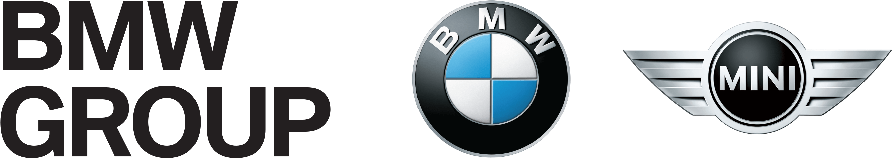

QMT Frontdesk Seamless Launch
Automatische Gantt-Visualisierung
Projekt
Projektstart
Projektende
Anlaufplan generieren
Exportieren
⛶ Vollbild
Filter:
Alle Sektionen
LeLe Prozess
"TOP 50" Themen
Good Practices
Lieferantenmanagement
Supportplanung Werk
E/E Prüfstände
LDM Prüfungen
Präventives Versorgungsteam
Projektübergabe
Sonstiges
Alle Phasen
Projektphase
BBG
PVL / VS 0
VS1
VS2
AP/HEA
SOP
3 Mo. n. SOP
OtD
Alle Abteilung
QMT FD
QMT BD
QMT PL
✕ Filter zurücksetzen
Export Format wählen
🖼️
PNG Bild
Hochauflösendes Rasterbild
📄
PDF Dokument
Druckoptimiertes Format
✕
Abbrechen